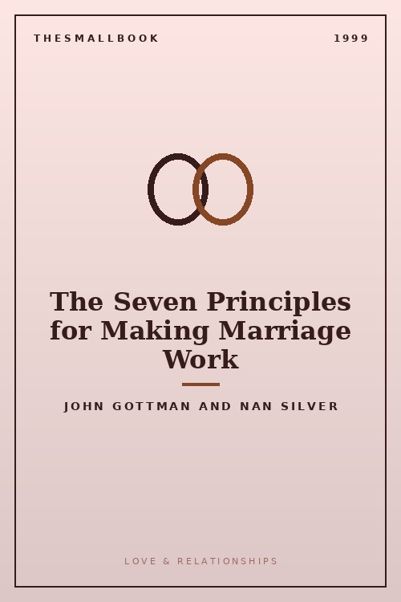

Library › Love & Relationships
The Seven Principles for Making Marriage Work - Summary & Key Lessons

What decades of watching couples actually predict: friendship, fondness, and how you fight.
📖 OPEN THE FULL INTERACTIVE BREAKDOWN →🌐 Read it in Hindi, Hinglish, Gujarati, Tamil & 22 more languages, with audio.
💡 The Big Idea
John Gottman's laboratory observed thousands of couples and distilled what separates the masters of marriage from the disasters. It is not compatibility or conflict avoidance. Masters maintain detailed love maps of each other's worlds, nurture fondness and admiration, turn toward small bids for connection, accept influence, solve the solvable problems, dialogue with the perpetual ones, and build shared meaning. The seven principles turn those findings into exercises any couple can run at a kitchen table.
🧠 The 8 Key Lessons
Lesson 1: Love Maps: Know the Country You Married
Principle 1
Couples with rich love maps know each other's current worries, hopes, history and small preferences, and update the map as life changes. John Gottman's research found this knowledge is the foundation everything else stands on, because you cannot respond to a partner you have stopped studying. Major life events, a baby, a new job, a death, redraw the territory, and marriages drift precisely when the maps go stale. The exercises are humble: questions, asked and remembered, refreshed for a lifetime.
📖 Example: In John Gottman's studies, husbands who could answer detailed questions about their wives' lives, friends, stresses, dreams, weathered the arrival of a first baby far better than those whose maps were blank. The knowledge was not trivia; it was the operating system of their responsiveness during the hardest transition marriage offers. Read the full example →
⚡ Do this: Ask your partner three map questions tonight: their current biggest stress, a hope for this year, and one small preference that changed recently. Remember the answers tomorrow, out loud.
Lesson 2: Fondness and Admiration Are the Antidote to Contempt
Principle 2
John Gottman names contempt, disgust, mockery, eye rolling, as the single strongest predictor of divorce, and fondness as its vaccine. Couples who can recall their history warmly, who narrate their struggles as weather rather than character, are inoculated against the contempt cascade. The principle is practised in small appreciations said out loud, because unspoken gratitude does no immunological work. Masters of marriage are not less irritated; they are more stocked with reasons the irritation does not define the person.
📖 Example: Couples in the lab were asked to tell the story of how they met. Those who lit up with fond detail, even while reporting current problems, overwhelmingly stayed together. Those whose stories had curdled into criticism were, in John Gottman's phrase, rewriting history, and the rewritten history predicted the ending with eerie reliability. Read the full example →
⚡ Do this: Tell your partner one specific appreciation daily for a week: observed, recent, and said where others in the house can hear the climate it makes.
Lesson 3: Turn Toward the Bids
Principle 3
Partners constantly bid for connection: a comment, a sigh, a touch, a joke at the window. John Gottman counted the responses: turning toward, turning away, turning against. Masters turned toward 86 percent of the time in his lab; the divorced had managed 33 percent. The moments are so small they look administratively irrelevant, which is the trap. The emotional bank account of a marriage is kept in this currency, and solvency there is what funds grace during conflict.
📖 Example: A husband points out a bird outside, not because he cares about ornithology but to test whether his wife is in the room with him. Her answer, a glance and a shared sentence, is a deposit. Multiplied by thousands of moments a year, the account either funds the marriage's hard seasons or overdraws silently toward them. Read the full example →
⚡ Do this: For three days, answer every bid from your partner within ten seconds, however briefly. Log your turn toward rate honestly at night.
Lesson 4: The Four Horsemen and Their Antidotes
Principles 4 and 5
John Gottman's famous quartet: criticism attacks character, contempt sneers from above, defensiveness refuses responsibility, stonewalling floods and shuts down. Each has an antidote. Criticism becomes a gentle start up, complaint about the situation with the need stated. Contempt yields to appreciation. Defensiveness yields to accepting even a slice of responsibility. Stonewalling yields to physiological self soothing, a twenty minute break that is announced, not vanished into. The cascade can be interrupted at any horseman, which is the hopeful engineering of the chapter.
📖 Example: A wife opens with you never think of anyone but yourself, and the room arms itself. Rewritten as a gentle start up, I feel overwhelmed by the mornings, I need us to split them differently, the same grievance arrives as a solvable request. John Gottman's couples practise the rewrite until it becomes their first language under stress. Read the full example →
⚡ Do this: Take your most repeated complaint and rewrite it as a gentle start up tonight: feeling, situation, need. Use that version next time.
Lesson 5: Perpetual Problems Get Dialogue, Not Solutions
Principle 6
About 69 percent of marital conflict, John Gottman found, is perpetual, rooted in personality and values that will not be fixed by any anniversary. Masters stop trying to win these and learn to dialogue with them: each partner explains the dream, history or value inside their position, and both honour it while designing livable compromises. Gridlock is what happens when the dream goes unspoken and each hears only obstinacy. The question that unlocks it is never why are you like this, but what does this mean to you.
📖 Example: A couple gridlocked on tidiness unfreezes when he traces order to the chaos of his childhood home and she traces mess to the rigidity of hers. The kitchen stays contested, but the contest is now between two histories being honoured instead of two defects being prosecuted, and compromises finally fit. Read the full example →
⚡ Do this: Pick one perpetual argument. Twenty minutes of dream questions only: what does your position protect, and where did you learn it?
Lesson 6: Accept Influence or Manufacture a Power Struggle
Principle 4
John Gottman's data on this point is stark: marriages where the husband refuses to share power and accept influence from his wife fail at dramatically higher rates, because every decision becomes a referendum on whose reality rules. Accepting influence is not surrender; it is treating your partner's concerns as data about a shared life. His exercises ask couples to practise yielding on small things visibly, building the muscle before the large decisions, money, moves, in laws, arrive with their heavier weather.
📖 Example: In the lab, a husband who said let us ask what you think would work, and meant it, could disagree on everything else and still score as a master. The sentence functioned as a pressure valve for the whole system, because his wife's nervous system had evidence that her voice changed outcomes in that house. Read the full example →
⚡ Do this: Yield visibly on one small decision this week, and say why: your view makes sense to me. Watch what it buys in the next big one.
Lesson 7: Shared Meaning Is Built, Not Found
Principle 7
The final principle is the marriage's culture: the rituals of connection, shared goals, roles and symbols that make two biographies into a household with its own story. John Gottman found masters narrate their struggles as a joint epic, us against the problem, with humour about the early hardships. Couples build this deliberately: how we do mornings, what this family celebrates, what the money is ultimately for. Without shared meaning, the first six principles are techniques in search of a country to defend.
📖 Example: Couples who could tell their story with a strong we, including the bad years reframed as chapters survived together, scored highest on every measure in the lab. Their secret was not a better past. It was editorial: the same events, narrated as a campaign they had served in together rather than a trial of each other. Read the full example →
⚡ Do this: Found one ritual of connection this week: a farewell, a reunion, a Friday review. Name what your household stands for in one sentence together.
Lesson 8: The Repair Attempt Is the Real Marital Skill
Throughout the Research
John Gottman's most hopeful finding: the success of a repair attempt, the joke mid argument, the touch, the let me try that again, predicts a marriage's future better than the absence of fighting. Failed repairs, not fights, are the danger signal, because they mean the friendship system can no longer interrupt the conflict system. Couples are taught to make repairs clumsily and to receive them generously, since a rejected repair, however graceless, doubles the cost of the next attempt.
📖 Example: Masters in conflict studies deployed repairs constantly, a silly face at minute four of an argument that would have escalated for an hour in other couples, and their partners, crucially, let the repairs work. The divorced couples made the same attempts and watched them get swatted away, after which the argument owned the evening and eventually the archive. Read the full example →
⚡ Do this: Make one repair attempt in your next disagreement, however clumsy, and if your partner makes one, accept it visibly before returning to the point.
✅ 5-Step Action Plan
- Ask three love map questions tonight; remember them aloud tomorrow.
- One specific appreciation daily for a week.
- Turn toward every bid for three days; log the rate.
- Rewrite your top complaint as a gentle start up.
- Run the dream questions on one perpetual problem.
- Practise the announced twenty minute break when flooded.
- Tell your how we met story together and listen for its temperature.
⚠️ When This Doesn't Work
John Gottman's prediction percentages come from his laboratory samples and have been debated by statisticians; the exercises, however, are the most field tested in couples research. Where there is violence or coercion, his own institute directs couples to specialist help first.
💀 The Graveyard Proves It
💬 Best Quotes from The Seven Principles for Making Marriage Work
- “Happy marriages are based on a deep friendship.”
- “The determining factor is whether couples repair, not whether they fight.”
- “Fondness and admiration are two of the most crucial elements in a rewarding and long lasting romance.”
Interactive version: mark lessons as read, listen in your language, share quote cards.